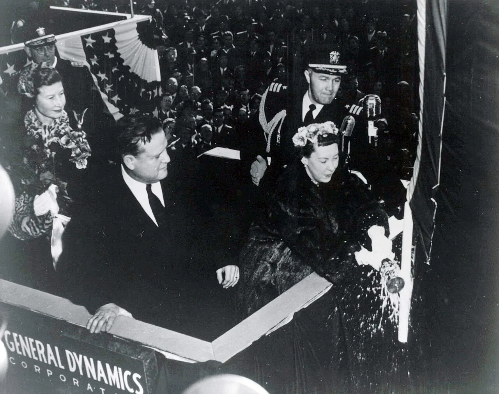
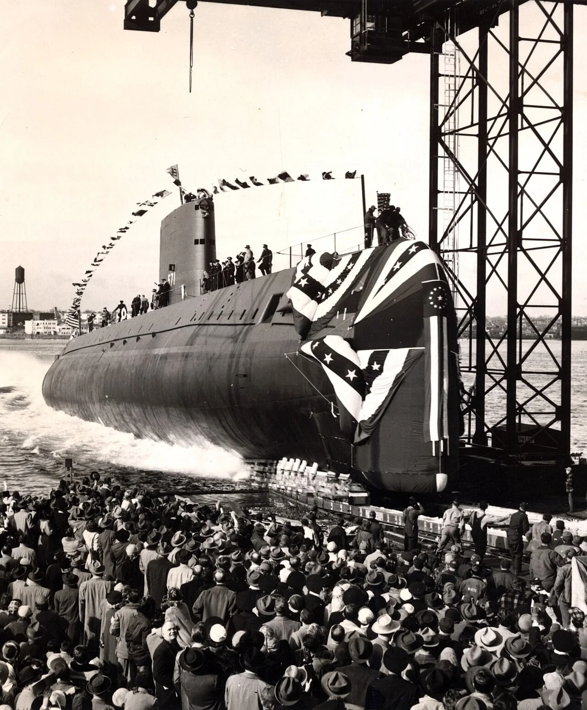
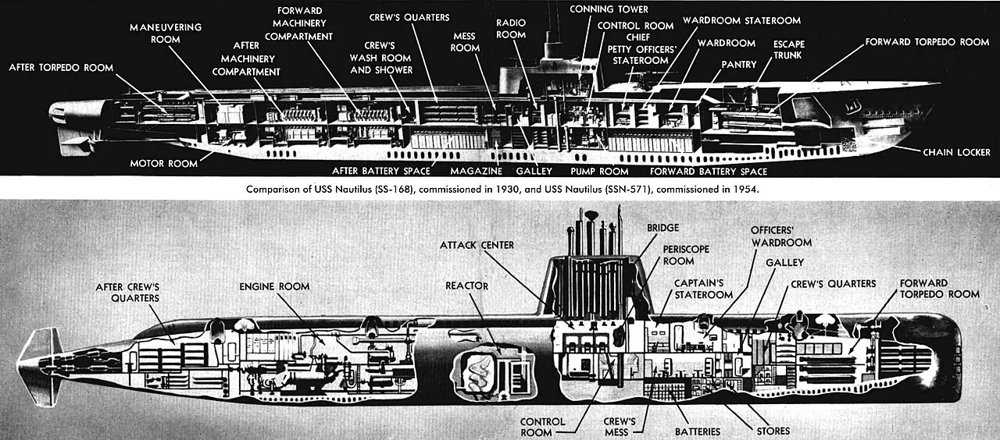
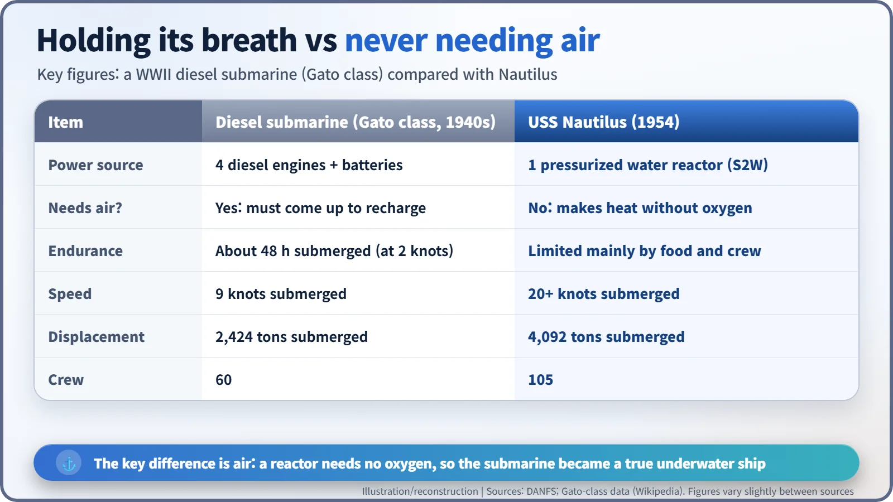

Nuclear History · 154
The First Lady and the Champagne Bottle — Launching USS Nautilus (21 January 1954)
The day Nautilus first floated was not the day she first went to sea: the reactor-powered submarine had several birthdays.
On 21 January 1954, First Lady Mamie Eisenhower broke a bottle of champagne across the bow of USS Nautilus at Groton, Connecticut, and the world's first nuclear-powered submarine slid into the Thames River. But a launch only floats the hull: Nautilus was commissioned on 30 September 1954 and did not go to sea under nuclear power until 17 January 1955.
A ship with several birthdays
"On 21 January 1954, the world's first nuclear submarine went to sea." You will find that sentence all over the internet, and it is only half right. That day USS Nautilus (SSN-571) did go into the water. But she did not leave for sea under nuclear power until almost a year later. A ship, it turns out, has several birthdays.
Launch, commissioning, departure: three different "firsts"
A launch is the ceremony in which a newly built hull is floated for the first time. At that stage the ship is still closer to an empty shell than a working vessel. When the fitting-out and testing are done, the navy formally accepts her into service, which is commissioning. Actually heading out to sea is a separate day again. For Nautilus, the launch came on 21 January 1954, commissioning on 30 September 1954, and the first departure under nuclear power on 17 January 1955. [1]

Truman laid the keel; the First Lady broke the bottle
The submarine spanned two presidencies. Congress approved construction in July 1951 (the name Nautilus was announced that December), and on 14 June 1952 President Harry S. Truman (1884–1972) officiated at the keel laying at the Electric Boat shipyard in Groton, Connecticut. The keel is the backbone running along the bottom of a ship, so the ceremony counts as the formal start of construction. The project was driven, closely and personally, by the head of the Navy's reactor programme, Captain Hyman G. Rickover (1900–1986). [1]
The ship's sponsor, the woman who would christen her, was Mamie Eisenhower (1896–1979), wife of President Dwight D. Eisenhower. The launch fell 44 days after Eisenhower's "Atoms for Peace" speech at the United Nations. An energy source the public knew mainly from bombs was about to be shown off as an engine. [2]
A January morning on the Thames
This Thames is Connecticut's river, not London's, though it shares the name. On the morning of the launch, hundreds of spectators gathered on the bank: shipyard workers, senior officers and plenty of reporters. The bow was draped in red, white and blue bunting. Mamie Eisenhower broke the traditional bottle of champagne across it, and the hull slid down the ways into the river. A local history account puts the moment at 10:57 a.m. [3]


The reactor was not running at that moment. A launch is a ceremony for the hull, nothing more. The Eisenhower Presidential Library still holds the official launch programme printed for the day by General Dynamics. [2]
Why "Nautilus"?
The best-known source of the name is Captain Nemo's submarine in Jules Verne's Twenty Thousand Leagues Under the Seas. The new boat was the fourth US Navy ship to carry the name. Her immediate predecessor was a diesel submarine, USS Nautilus (SS-168), which served from 1930 to 1945 and fought in the Second World War. In its April 1955 issue, the Navy magazine All Hands printed drawings of the two Nautiluses one above the other. [1]

A boat that holds its breath, and one that needs no air
What made this boat special comes down to air. A diesel engine needs oxygen to burn its fuel, so a Second World War submarine ran on batteries alone while submerged. A Gato-class boat creeping along at 2 knots would drain its batteries in about 48 hours. Like a free diver, it could only hold its breath for so long before it had to come back up. [4]
Nautilus had a pressurized water reactor at its heart, the Westinghouse-designed S2W (originally called the Submarine Thermal Reactor). Water kept at high pressure so that it cannot boil carries heat away from the fission reactions; that heat makes steam in a separate loop, and the steam drives the turbines. Fission needs no oxygen, so the heat keeps coming with no air at all. The fuel was highly enriched uranium. A land-based prototype of the same design had already gone critical in Idaho on 30 March 1953 and had been put through its paces.

According to the US Navy's Dictionary of American Naval Fighting Ships (DANFS), she displaced 4,092 tons submerged, carried a crew of 105 and could make more than 20 knots underwater. Her length is given variously as 319 to 324 feet (about 97 to 99 metres), depending on the source. [1]
30 September: a Navy ship at last
After eight more months of work, Nautilus was commissioned on 30 September 1954 under her first commanding officer, Commander Eugene P. Wilkinson (1918–2013). She was the first nuclear-powered ship ever commissioned into the US Navy. Even then she stayed tied up at the pier for four more months of construction and testing, and her lines were not cast off until 11:00 a.m. on 17 January 1955. The short signal sent that day is a story of its own. [1]
From warship to museum
Nautilus was decommissioned on 3 March 1980 and designated a National Historic Landmark in 1982. She was towed back to Groton in 1985, and since April 1986 she has been open to visitors at the Submarine Force Library and Museum, on the same river she was launched into. [5]
The champagne bottle of January 1954 was the first public sign that the atom could deliver steady heat rather than a blast, and drive an engine rather than a weapon. Making that engine actually carry the ship to sea took another year.